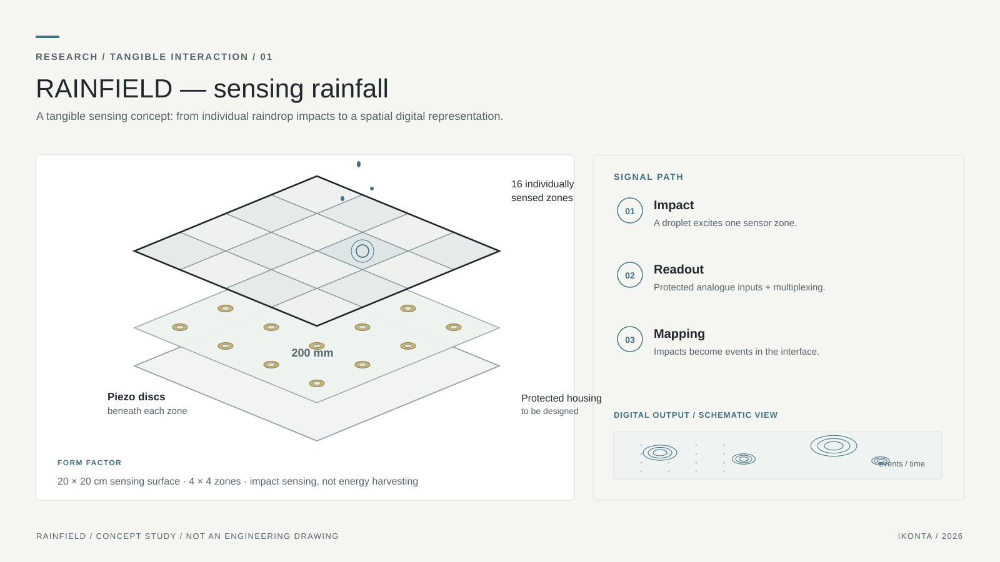
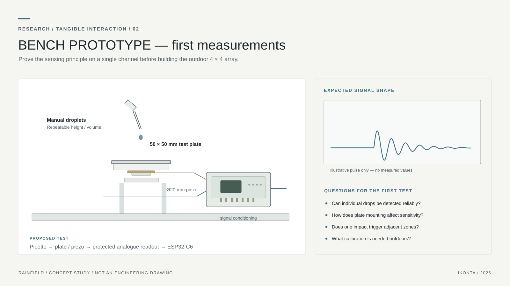

RAINFIELD
Rain as a pattern of events.
An early research concept exploring how piezoelectric sensors might translate the impact of raindrops into signals that can be measured, interpreted and made visible.

Can rain be read, drop by drop?
The starting point is simple: a raindrop strikes a surface and creates a brief mechanical event. A piezoelectric element can respond with an electrical signal. The challenge is to interpret many such signals without mistaking the number of impacts for a calibrated rainfall measurement.
The work brings together a physical sensing surface, data acquisition and a visual language suitable for investigation and teaching.
A surface that listens.
A segmented 20 × 20 cm sensing plate is being explored as a possible arrangement. The drawing suggests sensing zones, signal capture and a small laboratory test arrangement. Dimensions, mechanical coupling, noise filtering and signal separation remain design questions.

One phenomenon, three readings.
The digital study uses three distinct views. Rain is an artistic animation of impact events; Intensity shows relative activity over time; mm estimate explores how a calibrated rainfall-depth estimate could be presented, including uncertainty.

From impact signal to rainfall.
What can a piezoelectric pulse reveal about droplet impact? How do plate geometry, mounting and overlapping impacts affect the signal? How might the resulting measurements support students' reasoning about weather and data?
Estimating rainfall in millimetres requires calibration against a reference rain gauge and tests under controlled and natural conditions. For now, RAINFIELD is a research and interface concept, not an operational rain gauge.